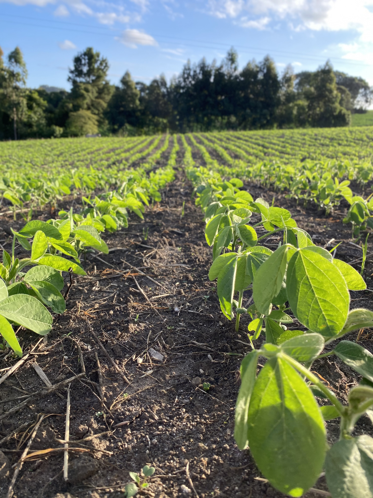

Conheça como a soja é cultivada, sua importância na economia e sua presença no nosso dia a dia.
O cultivo da soja começa com a escolha do solo adequado, que deve ser bem drenado e rico em nutrientes. Antes do plantio, os agricultores preparam a terra com aragem e adubação. O plantio geralmente ocorre entre os meses de setembro e dezembro, dependendo da região.
Após o plantio, a planta passa por várias fases: germinação, crescimento vegetativo, florescimento e maturação. Durante o desenvolvimento, são aplicadas técnicas modernas como sensores de solo, GPS em tratores e controle biológico de pragas. A colheita acontece cerca de 100 a 130 dias após o plantio.
O Brasil é um dos maiores produtores e exportadores de soja do mundo. Em 2024, foram colhidas aproximadamente 155 milhões de toneladas de soja. O estado do Mato Grosso é o líder na produção, seguido por Paraná, Rio Grande do Sul, Goiás e Mato Grosso do Sul.
A soja é uma das principais culturas da agricultura brasileira, gerando empregos, movimentando o comércio exterior e contribuindo para o PIB do agronegócio.
A soja está presente em muitos produtos que consumimos, seja diretamente ou como ingrediente em produtos industrializados. Veja alguns exemplos: